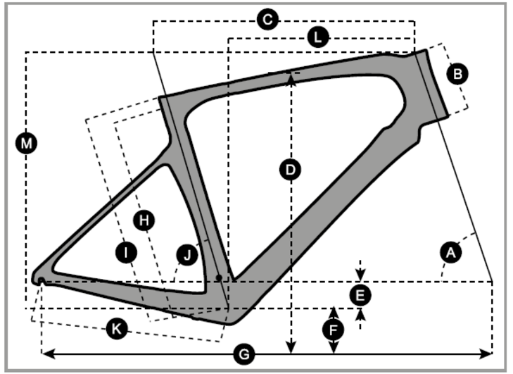

2017 포일 RC Black Yellow
The FOIL made a name for itself racking up stage wins in the Tour de France, wins at Milan San Remo and Liege Bastogne Liege, to name
a few. This success urged us to make the FOIL RC even more aerodynamic and comfortable than before, while maintaining an incredible
lateral stiffness. Its HMX Carbon fiber frame has been completely redesigned to provide even less drag, helping you gain those extra
precious seconds, and comes in as one of the lightest in the aero market.With a Syncros integrated handlebar system,
and Syncros Carbon components, this bike was designed to help you win every ride.
++ Shimano Dura-Ace 22 Speed Drivetrain
++ Syncros Carbon Components
++ Zipp 30 Course Wheels
SPEC
| 무게 | 6.98kg |
|---|---|
| 프레임 |
FOIL HMX / IMP, F01 AERO Carbon tech. Road Race geometry Replaceable Dropout STD Seattube / INT BB |
| 포크 |
FOIL HMX 1 1/4” - 1 1/2” Carbon steerer Integrated Carbon Dropout |
| 헤드셋 | Syncros Integrated |
| 뒷변속기 | Shimano Dura-Ace RD-R9100 22 Speed |
| 앞변속기 | Shimano Dura-Ace FD-R9100 |
| 쉬프터 | Shimano Dura-Ace ST-R9100 Dual control 22 Speed |
| 브레이크레버 | - |
| 브레이크 | Shimano Dura Ace BR-R9110 / 9110 rear Super SLR Dual pivot / Direct mount |
| 크랭크셋 | Shimano Dura-Ace FC-R9100 Hollowtech II 53x39 T |
| BB셋 | Dura Ace BBR9100-PB |
| 핸들바 | Syncros Carbon FOIL Combo |
| 핸들스템 | - |
| 페달 | - |
| 싯포스트 | Syncros FOIL aero Carbon |
| 안장 | Syncros RR1.0 Carbon |
| 허브 |
앞 : Zipp 30 Course 뒤 : Zipp 30 Course |
| 체인 | Shimano Dura-Ace CN-HG901-11 |
| 카세트 |
Shimano Dura-Ace CS-R9100 11-28 |
| 스포크 | Zipp 30 Course |
| 림 |
Zipp 30 Course 18 Front/24 Rear |
| 타이어 |
Continental Grand Prix 4000 S II 700x25C |
| ※타이어를 포함한 기타 부품은 입고시기에 따라 스펙이 변경될 수 있습니다. | |
GEOMETRY & SIZE

GEOMETRY
| XXS(47) | XS(49) | S(52) | M(54) | L(56) | XL(58) | |
|---|---|---|---|---|---|---|
| A 헤드튜브 각도 | 70.5˚ | 71˚ | 72˚ | 72.5˚ | 73˚ | 73.3˚ |
| B 헤드튜브 길이 | 110 mm | 115 mm | 130 mm | 150 mm | 170 mm | 190 mm |
| C 탑튜브 길이(수평) | 510 mm | 520 mm | 535 mm | 550 mm | 565mm | 580 mm |
| D 스탠드오버 높이 | 715.9 mm | 729.4 mm | 753.6 mm | 773.5 mm | 798.8 mm | 812.9 mm |
| E BB옵셋 | 67 mm | 67 mm | 67 mm | 67 mm | 67 mm | 67 mm |
| F BB 높이 | 272 mm | 272 mm | 272 mm | 272 mm | 272 mm | 272 mm |
| G 휠 베이스 | 972 mm | 978 mm | 980 mm | 987 mm | 994.2 mm | 1,002.9 mm |
| H BB 센터에서 탑튜브 중심 | 400 mm | 420 mm | 450 mm | 470 mm | 490 mm | 510 mm |
| I BB 센터에서 탑 싯튜브 | 410 mm | 430 mm | 460 mm | 480 mm | 500 mm | 520 mm |
| J 싯트 각도 | 74.5˚ | 74.5˚ | 74˚ | 73.6˚ | 73.3˚ | 73˚ |
| K 체인스테이 | 405 mm | 405 mm | 405 mm | 405 mm | 405 mm | 405 mm |
| L 리치 | 307.6 mm | 378.8 mm | 384 mm | 388.9 mm | 394.5 mm | 400 mm |
| M 스택 | 502.6 mm | 509 mm | 526.7 mm | 547.5 mm | 568.3 mm | 588.5 mm |
| N 스템 길이 | 100 mm | 100 mm | 100 mm | 110 mm | 110 mm | 120 mm |
SIZE
| Body Height | < 165 cm | 165 - 175 cm | 175 - 185 cm | 185 - 195 cm | > 195 cm |
|---|---|---|---|---|---|
| FOIL | XXS XS S M L XL XXL | ||||